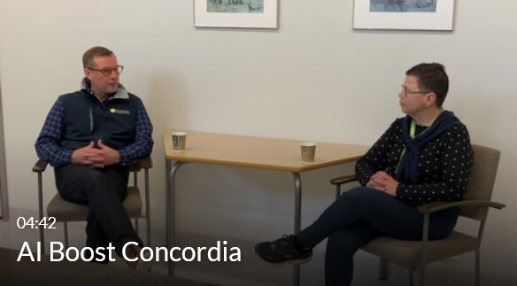

AI Boost Concordia
Fredrik Sandelin från Concordia, utvecklingsbolaget för Jakobstadsregionen, delar sina iakttagelser om hur företag har börjat använda AI och hur utvecklingen har förändrats den senaste tiden.
Fredrik Sandelin · ConcordiaSe videon ↗